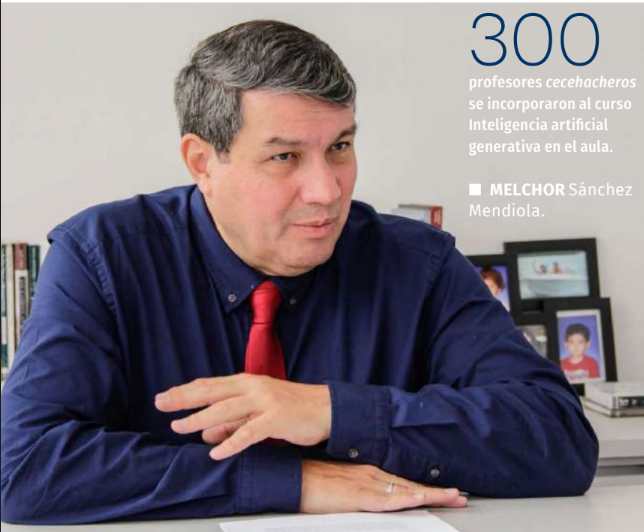

La Coordinación de Universidad Abierta, Innovación Educativa y Educación a Distancia (CUAIEED) puso al alcance de los docentes de la comunidad del bachillerato universitario el curso masivo abierto en línea (MOOC, por sus siglas en inglés) Inteligencia artificial generativa en el aula, que busca responder a las inquietudes y necesidades sobre la incorporación de la IA en sus clases.
El curso está disponible en la plataforma de Coursera y en su lanzamiento participaron los titulares de la CUAIEED, del Colegio de Ciencias y Humanidades, de la Escuela Nacional Preparatoria, y del Bachillerato a Distancia, Melchor Sánchez Mendiola, Benjamín Barajas Sánchez, María Dolores Valle Martínez y Guadalupe Vadillo Bueno, respectivamente, así como Jackeline Bucio García, de la subdirección de Bachillerato a Distancia y MOOC.
Adrián Sarmiento Gutiérrez, jefe del Departamento de Desarrollo del MOOC; y Omar Terrazas, coordinador de Bachillerato a Distancia y del laboratorio de arte y tecnología de la Dirección de Bachillerato, dieron los pormenores del curso, que tiene una duración de cuatro semanas. Al hacer uso de la palabra, Sánchez Mendiola expresó que la Universidad Nacional integró un grupo de trabajo sobre el uso de la inteligencia artificial generativa en la educación, de manera que se identificaron los retos éticos, normativos, y otros relevantes para su desarrollo en las aulas.
La UNAM integró un grupo de trabajo sobre el uso de la IA generativa en la educación, de manera que se identificaron los retos éticos, normativos, y otros relevantes para su desarrollo en las aulas.

Dichos aspectos se verán en el curso, el cual, indi- có, está perfectamente alineado con las necesidades de los docentes, además de que es el único que existe en español, está “hecho con el aprecio por los aspec- tos pedagógicos y tecnológicos con que se caracteri- zan los MOOC de la Universidad”. El siguiente reto, dijo, será utilizarlo y difundirlo.
Al respecto, Benjamín Barajas Sánchez resaltó que el CCH se encuentra en el proceso de revisión y ajuste de sus Programas de Estudio, y se han forma- do 36 comisiones con la participación de poco más de 400 docentes, y una de las líneas transversales que aprobó el Consejo Técnico es que se incluya en las 73 asignaturas del Plan de Estudios el conocimiento y uso de las nuevas tecnologías aplicadas a los procesos de enseñanza y aprendizaje, “por eso nos entusiasma tanto este curso”.
Informó que a dicha actividad se han inscrito 300 profesores cecehacheros a las primeras dos sesiones de las 4 que se tienen contempladas; se prevé que 400 docentes asistirán al curso de Inteligencia artificial. “La IA ha despertado una gran expectación en la comunidad del CCH; por un lado, se podría pensar que representa una amenaza porque sustituiría las formas tradicionales de investigar y producir textos con la consecuente desaparición de la creatividad e identidad personal, pero estas dudas parecen tó- picos recurrentes que se desarrollan a partir de los cambios tecnológicos y su impacto en las prácticas sociales”.
Por lo anterior, dijo, habría que conocer los al- cances y las limitaciones de la IA para diseñar acti- vidades de aprendizaje que se puedan instrumentar en las aulas y laboratorios para beneficio de nuestros alumnos. Durante su intervención, Valle Martínez des- tacó algunos beneficios del uso de la IA en la edu- cación, entre estos, ampliar el acceso a la educa- ción, personalizar la experiencia de aprender al adaptar el contenido y los métodos de enseñanza a las necesidades específicas de cada estudiante mediante el análisis de datos y seguimiento del progreso individual; también permite crear ru- tas de aprendizaje personalizado.
Asimismo, proporcionar retroalimentación instantánea sobre el desempeño del estudiante e identificar áreas de fortaleza y debilidad. Ade- más de ayudar a los docentes a ajustar su enfo- que pedagógico. Por su parte, Bucio García reconoció que se trata de un tema que requiere de un constante aprendizaje, por lo que para llegar a la creación del curso se conformó un equipo de trabajo en el que participaron distintos especialistas.
Este curso es una comunidad. Estas herra- mientas cambian, se actualizan, y aquí nadie tiene las respuestas ciertas, pues hay que cons- truirlas en comunidad. La IA es justamente algo con lo que todos pueden interactuar, convivir, incluidos nuestros estudiantes, y hay que cono- cer sus alcances y posibilidades, señaló.
El curso, informó, se divide en cuatro sema- nas; en la primera se aprenderá a interactuar con las inteligencias artificiales generativas del tipo texto a texto y se identificarán los tipos de actividades de aprendizaje y evaluación que puedan resolver estas herramientas; en la se- gunda, los asistentes conocerán algunas de las herramientas de IA generativas que pueden ser útiles en el aula.
Para la siguiente semana, se presentarán aquellas herramientas que pueden ser útiles para las actividades docentes relacionadas con la enseñanza o redacción de textos acadé- micos; para la cuarta semana se conocerán las limitaciones en el uso de la IA generativa en la práctica, responsabilidades éticas y un pano- rama del futuro de su uso en la educación.
Finalmente, Sarmiento Gutiérrez enu- meró algunos otros aspectos que se verán en el curso, como la revisión de conceptos, las inteligencias artificiales que usan texto, y en particular el ChatGPT, herramientas de eva- luación, catálogo de herramientas de texto e imagen, su uso en la redacción, escritura, y en la investigación, y cómo incorporarla a las actividades de su asignatura, además de su uso ético, y sesgos futuros, como la multimodalidad.
El curso, que comenzó en la plataforma Coursera, dedicó la primera sesión a explicar que la inteligencia artificial se le denomina “a todos los procesos que ejecuta la computadora y que simulan los procesos semejantes a la in- teligencia humana, aunque en la parte racio- nal aún hay limitaciones.

Se le denomina inteligencia artificial a todos los procesos que ejecuta la computadora y que simulan los procesos semejantes a la inteligencia humana.
En este mismo sentido, se destacó que la IA es un área de las ciencias de la com- putación. Aquellas que generan conteni- dos, como textos, sonidos e imágenes se les llama generativas, y las que elaboran texto de manera similar a los humanos, se les nombra grandes modelos de len- guaje, a ésta pertenece el ChatGPT (G, es generative, que crea contenido; P, es por pretrained, preentrenado a partir de millones de frases y textos; y la T es de transformer, que es la forma en que la IA pondera la atención en las palabras para asignar su relevancia en las frases).
Algunas capaces de entender el len- guaje escrito y provocar respuestas co- rrectas son el ChatGPT, Bard, de Google, Bing chat, de Microsoft. En la actualidad, se comentó, existen IAG para crear contenidos diversos. La más común es la que se ingresa un texto con una instrucción y se espera un texto como salida, a ésta se le denomina IA del tipo texto a texto.
La inteligencia artificial ha despertado una gran expectación en la comunidad del CCH; por eso nos entusiasma tanto este curso”, señaló el director general del Colegio, doctor Benjamín Barajas Sánchez.
Algunos ejemplos de texto a texto son ChatGPT, Bing Chat, Bard, YouChat; de texto a imagen: DALL-E, MidJourney, Stable Diffusion y Bing Image Creator; de texto a video: Meta AI, Runaway, Google AI y Synthesia; y de texto a audio están PlayHT, WellSaid, Murf.AI y Descript. También existen las herramientas de texto a código, como GitHub Copilot, Code Interpreter; mientras que de imagen a texto: Image2Caption y Neural.love; y de audio a texto, Whisper y Descript.